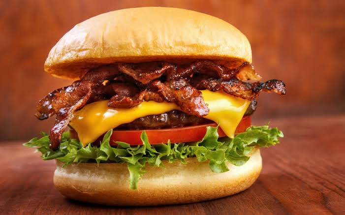
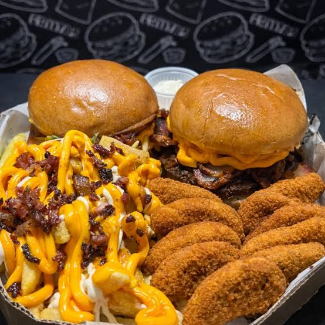

Black Fire Burgers
Rua Central, 123 – Centro
Rua Central, 123 – Centro

O equilíbrio perfeito em cada mordida. Nosso hambúrguer grelhado no ponto certo, coberto por queijo derretido, alface americana sempre crocante e fatias de tomate fresco. Tudo isso servido em um pão macio e finalizado com o toque especial da nossa maionese da casa.
Pedir X-Burguer
Hambúrguer grelhado na chapa com queijo e presunto, servido em pão macio com vegetais selecionados (alface, tomate e milho) e o toque artesanal da nossa maionese temperada.
Pedir X-Salada
Pão macio, hambúrguer suculento, queijo derretido e generosas fatias de bacon crocante. Acompanha alface, tomate fresco e a nossa exclusiva maionese da casa.
Pedir X-Bacon
2 X-Burguers suculentos (pão, carne e queijo derretido) + 1 Porção de Batata Frita Média crocante + 2 Refrigerantes em lata (350ml). A combinação ideal para dividir com quem você gosta!
Pedir Combo Casal PerfeitoO primeiro ponto a destacar é a generosidade. Diferente de muitos lugares que economizam no "protagonista", este xis veio com o bacon em fatias crocantes que se estendiam para fora do pão, mantendo aquele equilíbrio difícil entre a crocância da gordura e a maciez da carne defumada.
O grande triunfo deste xis foi a temperatura dos vegetais. É muito comum o tomate e a alface murcharem com o calor da chapa, mas aqui eles mantiveram a crocância. A alface americana estava picada finamente e o tomate, em fatias generosas, trouxe a acidez necessária para quebrar a gordura do queijo derretido.
O destaque absoluto aqui foi o queijo muçarela. Ele não estava apenas derretido; ele estava fundido à carne, criando aquela camada elástica que estica a cada mordida. A quantidade foi generosa o suficiente para envolver todo o disco de carne, garantindo que não houvesse nenhuma "mordida seca".